Diving into Analytics
This week, we focused heavily on bringing our data to life. I took point on the Analytics section, designing an interface that lets coaches dig deep into swimmer performance and predictive modeling. When you first enter the Analytics section, you are presented with a mode selector giving you three distinct paths: Single Swimmer, Team Overlay, or Multi-Swimmer.
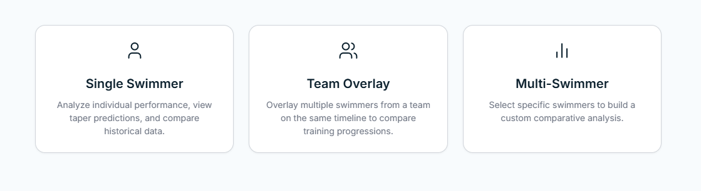
The Full Analytics View
Once a mode is selected, you are brought into the main Analytics dashboard. Here is a look at the full page in Multi-Swimmer mode. We have a primary graph displaying time data across a season, flanked by data controls at the top and roster management on the side.
This layout is designed to keep the visual data front and center while allowing the coach to manipulate the underlying dataset without having to navigate to different pages or lose their train of thought.
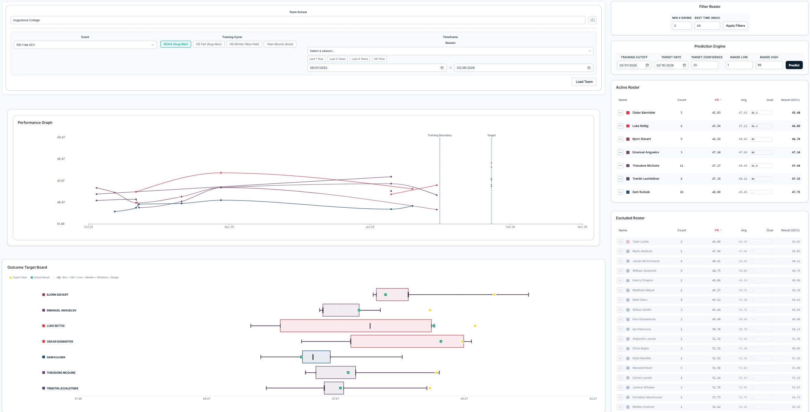
Team Search & Filtering
To get the right data on the screen, the top control panel allows coaches to perform a broad team search. You can select the specific school/team, gender, season timeframe, and event you want to analyze.
We've also added contextual filters to account for the differences in training cycles. For example, coaches can easily toggle between the NCAA (Aug-Mar) cycle or High School Fall/Winter seasons, ensuring the data mapped on the graph reflects the correct training block.
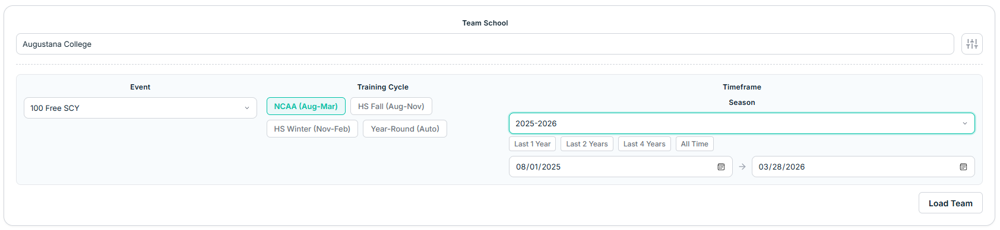
Swimmer Filters
Once a team's roster is loaded, a coach may not want to look at every single athlete—especially for large teams. To handle this, we added an additional granular control panel to filter the loaded swimmers.
Coaches can narrow down the roster by setting a minimum number of swims and a best-time (max) threshold. This ensures the data is clean and they are only looking at swimmers who have consistently competed in the event or who meet a specific competitive standard.
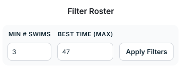
Swimmer Lists & Roster Management
The athletes are displayed in a side panel split into two lists: Active Roster and Excluded Roster. You can easily add or remove specific swimmers from the active dataset by clicking the + or - buttons next to their names.
These lists are highly interactive, allowing you to filter and sort by any column. By default, it organizes athletes by their personal record (PR) from fastest (lowest time) to slowest. The list also includes a manual input for goal times; when a coach enters a numerical goal for an athlete here, it renders visually as a star on our outcome charts.
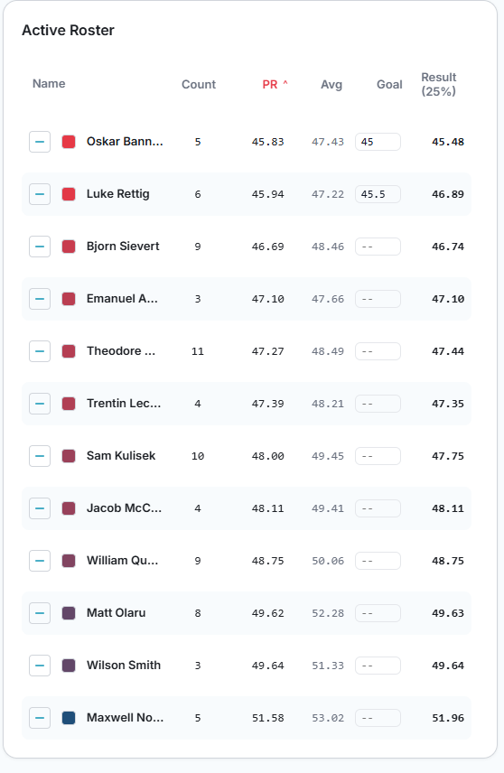
Performance Tracking
Over on the Performance Graph, the active roster's time data is mapped out across the season. To make it easy to differentiate athletes at a glance, the data lines representing each swimmer's times are drawn using a color gradient.
Red indicates the fastest PR swimmer, transitioning through the spectrum to blue for the slowest swimmer in the active group. If a coach wants to highlight a specific athlete or change their assigned color, they can easily modify it by clicking the color block next to that swimmer's name in the roster list.
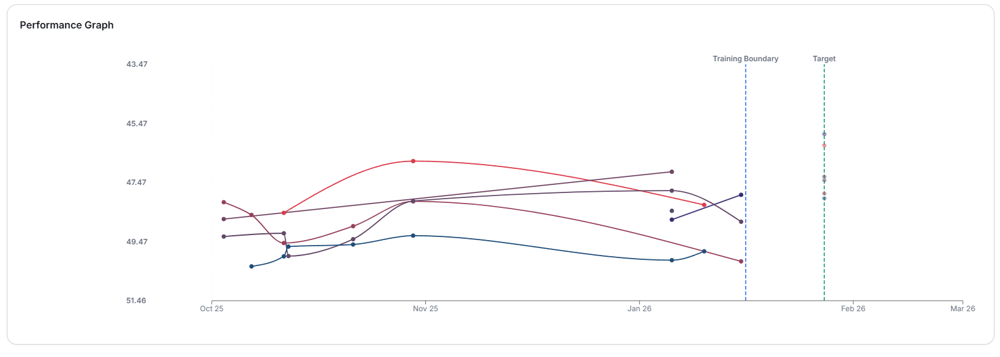
The Prediction Engine
One of the core machine learning features we are building into SwimIQ is taper prediction. The Prediction Engine menu allows coaches to calculate an estimated time range for an athlete's fully tapered performance at a championship meet.
Because our current dataset consists of completed past seasons, we test our model by setting a "training cutoff" date (dictating what times the model is allowed to see) and a "target date" for the prediction. These dates appear as vertical reference lines—blue and green dashed lines—on the main performance graph.
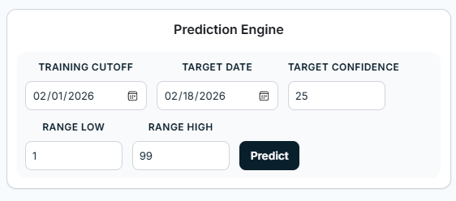
Outcome Target Board
The results of the prediction engine are visualized on the Outcome Target Board using a specialized box-and-whisker chart. The inner box represents the 50% confidence interval for the predicted time, while the outer whiskers extend to the 1st and 99th percentiles.
To see how accurate the model was, a green checkmark box indicates the actual tapered time the person swam at that target date. Any coach-entered goal times appear here as yellow stars. The target confidence value shows the percent guess based on the prediction, visible in the roster list. Our ongoing goal is to continue tinkering with the backend model to make that green checkmark consistently land tighter inside the prediction box.
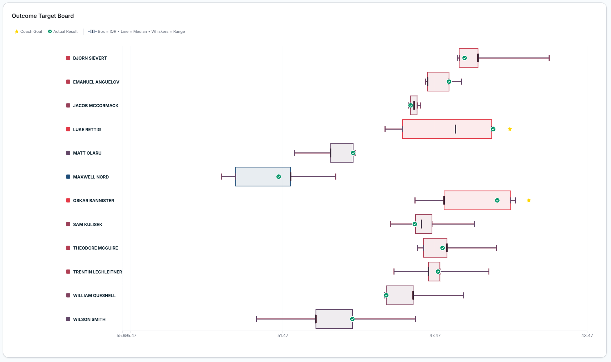
Single Swimmer View
For highly focused analysis, the Single Swimmer page isolates an individual athlete's data. This view enlarges the swimmer's core stats above the performance graph and includes a dedicated meet history list.
This allows coaches to click into a specific swimmer and see exactly where and when their times were achieved throughout the season without the clutter of the rest of the team.
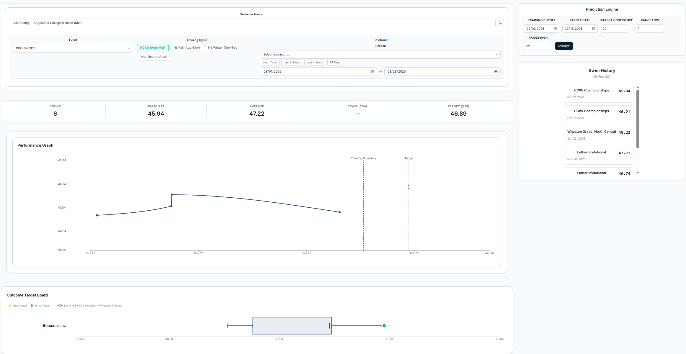
Authentication & Account Types
Another major milestone this week was establishing our user authentication flows and database connections. When a user first opens SwimIQ, they can now create an account using a standard email and password or by continuing with Google OAuth.
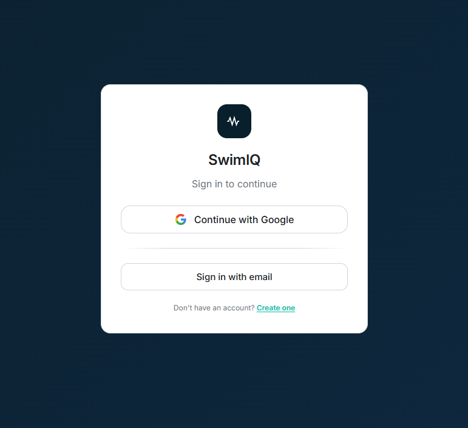
Role Selection: Coach vs. Athlete
Once signed up, the user must select their account role: Coach or Athlete. This is a critical junction, as it dictates what data they can see and what actions they can perform within the app.
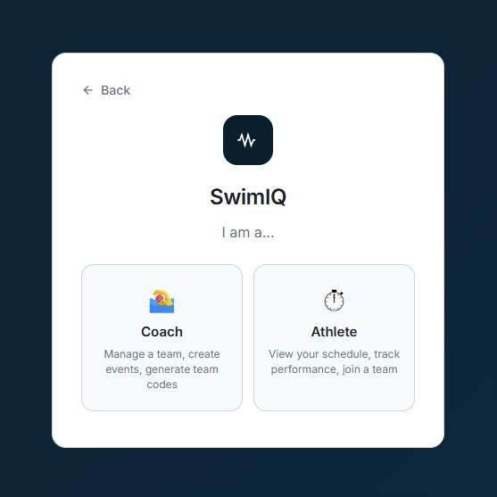
Coach Accounts & Team Generation
When a coach creates an account, they generate a new team profile in our database. This system generates a unique team code that the coach can securely hand out to their roster.
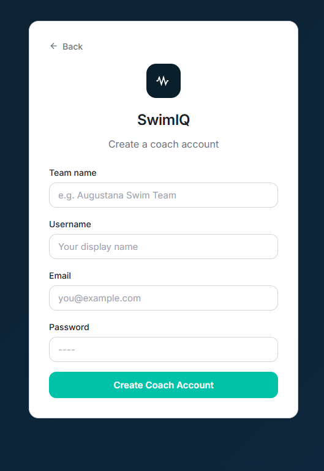
Athlete Accounts & Linking
Athletes have two choices during onboarding. They can sign up as an independent, unlinked account (if they just want to track their own times manually), or they can join an existing team.
By entering the team code provided by their coach, the athlete's account is instantly linked to the team's database. This automatically populates their dashboard with the team's scheduled meets, practices, and roster data. While these database writing and linking systems are successfully in place, our next step is to add robust guardrails and input validation to ensure account security before moving to production.
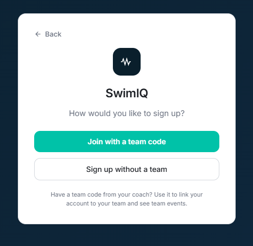
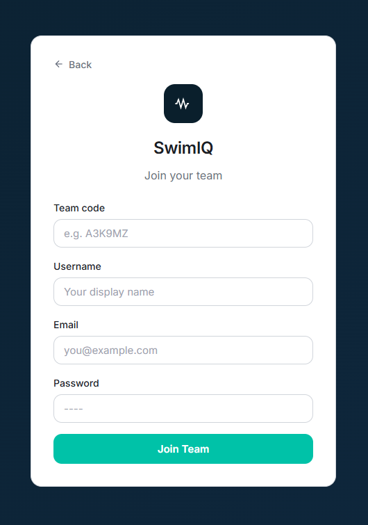
Practice Builder Updates
Tyler also pushed a massive update to the Practice Builder this week. The interface has been completely styled for a better user experience. As a coach builds out structured workout sets, a live PDF preview generates on the right side of the screen.
This preview automatically calculates and displays yardage totals for individual sets as well as the complete practice total. Once finished, the coach can print the PDF directly. Best of all, these practices now save directly to the database, so coaches can log in, pull up an old practice, edit it, and reuse it instantly.
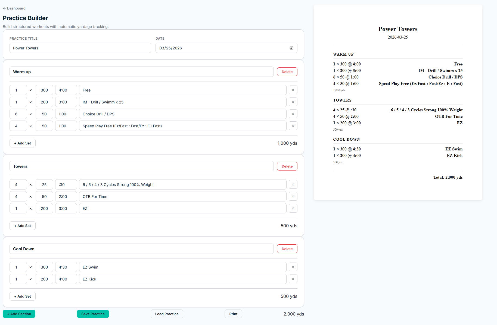
Sprint One Presentation & What's Next
We had our Sprint One presentation this week, and it went incredibly well! Following that, our client demo was a great success and provided some excellent feedback that is shaping our immediate roadmap.
The client suggested adding a manual entry system for data outside of our file importing method, as well as a meet simulation tool based on editable times. We are making these top priorities. Looking ahead, the next sprint is going to be packed. Here is what we are planning to tackle:
- Mobile App: Begin creating the mobile version of SwimIQ.
- Health Data Integration: Setup the handoff of health data from the mobile app to our database.
- Meet Simulator: Build out a strong meet simulation tool based on the client's feedback. We may also explore creating an optimization algorithm for this, though that algorithm might stretch into the following sprint.
- Communication: Add messaging and announcement features for teams.
- AI Integration: Develop a Gemini-powered set designer to help coaches generate creative practices.
There are plenty more cool features to come as we move into the second half of the spring. See you next week!